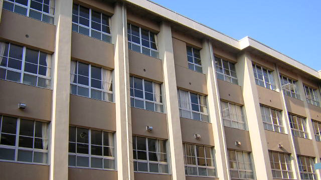

高校、特に進学校に対するイメージは入学前と入学後にズレが生じることが多々あります。生徒はもちろん、保護者の方も高校の受験指導がどういったものなのかを把握する機会が乏しいため「こんなはずじゃなかった」と落胆する声を多く聞いてきました。そんな高校の受験指導の中から学校組織の核となる「授業」、受験指導の核となる「合否予測」についての私の意見をお話します。受験指導についてはこちらの記事で詳しく分析しています。（受験指導から分析！進学校に対する幻想と入学後の実態）
1. 授業
授業は必要性を感じて初めて価値を持つ
保護者の皆さんは思い出してみてください。皆さんは高校時代に学校や塾で学んだ内容、特に演習問題の解法を今でも覚えていますか？ たぶん覚えていないでしょう。では、高校生の当時はどうですか？ これもよくよく思い出してみればあまり覚えていなかったはずです。
基本的に、問題の解法や頻出知識は、自分が「必要性」を感じて悩んだあげく、答えを知って初めて定着するものです。つまり、模試の結果から「このままでは受からない」と思い、参考書と問題集を必死で解き、解答を読む。それでも分からず頭を抱えたあげくに授業で解説されてこそ価値を持つものなのです。
授業は「教科に対する姿勢」を育成するためにある
授業の意味とは一体なんでしょう。それは実は、「教科に対する姿勢」の育成にあります。英語という教科は決して暗記やフィーリングを基に取り組むものではなく、厳密な文法の規則を基にロジカルに進めるものであること。あるいは、世界史という教科は人名語句を覚えるものではなく、幾多の歴史観を土台とした出来事の因果関係を理解するものであること。
このような教科に向き合う際の姿勢を知らず知らずのうちに育てているのです。驚くような入試実績を出している進学校の授業は、実はこのような「原則」を伝えるものであることが普通です。それもそのはず、教科に対する姿勢がしっかりしていない状態では、上位大学に受かることは非常に難しくなっているのですから。
授業について説明会や相談会で質問するポイント
まとめると、「よい受験指導」としての授業は、「原則を伝える」ものであるということ。「予備校の講師が課外授業をやっています」「放課後7時間目を設定し、問題演習を1年次から行います」。これらの売り文句はよく見かけますが、それらが効果を発揮することはあまりないでしょう。
多くの私立高校では、9月から11月に「個別相談会」を実施しています。そこでは高校の先生と直にお話をすることができますので、ぜひ「どんな名物授業があるか」と聞いてみてください。そこでいくつもの講義が挙がってくる学校は、「原則を伝える」授業ができている可能性が高くなります。
2. 合否予測
志望校の選定は、つまるところ生徒の実力からの「合格・不合格」予想をして、受験校の調整を行うことにつきます。
合否予測が難しい理由と恩恵
例えば高2の冬の段階である業者の模試で５科偏差値５０の生徒が一年後A大学に受かるかどうか。模試の「判定」欄はこれまでの膨大なデータからこの判断を行うものですが、残念なことに、高３以前ではあまり当てになりません。高２までの模試は浪人生のデータが入っておらず現役生のみであること、さらに生徒の性格やそれまでの学習の状況が反映されていないことが理由です。特に後者はとても重要になります。ですから、本来であれば生徒を直接指導する先生の方が、数字しか知らない模試の判定よりも正確に予想を立てることができるはずなのです。
この判断をしっかりできていれば、「非常にレベルの高い大学を志望校として掲げているが、本人も実は受かるとは思っていないため、勉強に本気で取り組めない」という最悪のパターンを防ぎ、心の底から真剣に努力をする状態に持って行くことができるのです。
高校と予備校・塾の棲み分け
正直なところ、私立の進学校であってもこの分野に関しては予備校や塾に全く及びません。もっと言えば担当される先生方は、これらの作業を「やりたくないもの」ととらえている傾向があります。学校と予備校・塾の棲み分けとでもいうのでしょうか、どちらかといえば「教育」とは距離のあるこれらの作業は、予備校や塾がやるべきもので、学校はできる限り手をつけるべきではないと思われているようです。
そのため、学校が合否の「読み」を組織的に綿密に行うことはまれであり、多くは担当の先生一人一人の感覚に頼っています。また、合否予測の資料となる試験のデータについても、学校の場合、入試に使うのにはあまり適さない「難度が低すぎる」ものを使っていたり、ひどいときには定期テストのデータを使用している場合もありますから、当然読みの正確性は低くなるでしょう。これらの状況は、県立は当然のこと、大学入試を重視する進学校であってもあまり変わりません。
高校に合否予測は期待できない？
この志望校選定と合否の読みについては、どの高校に行こうと、予備校や塾と比べればそこまで差が無いのですから、過度の期待をすることは禁物です。塾で指導していると、このような指導を学校が行ってくれないことに対する生徒・保護者の不満をよく耳にしますが、そもそも求めるところが間違っているというのがわたしの本音です。高校にこの手の指導を求める場合、どんなに売り文句がすばらしくても、あくまで「オプション」であると考えておく方がよいでしょう。
3. まとめ
- テクニカルな授業ではなく、教科への姿勢を作る「名物授業」の重要性
- 合否予測と志望校選定の精度はどの高校も大差なし
次回は受験指導のもう一つの重要ポイントである「課題・小テスト」についてお話しします。お楽しみに！